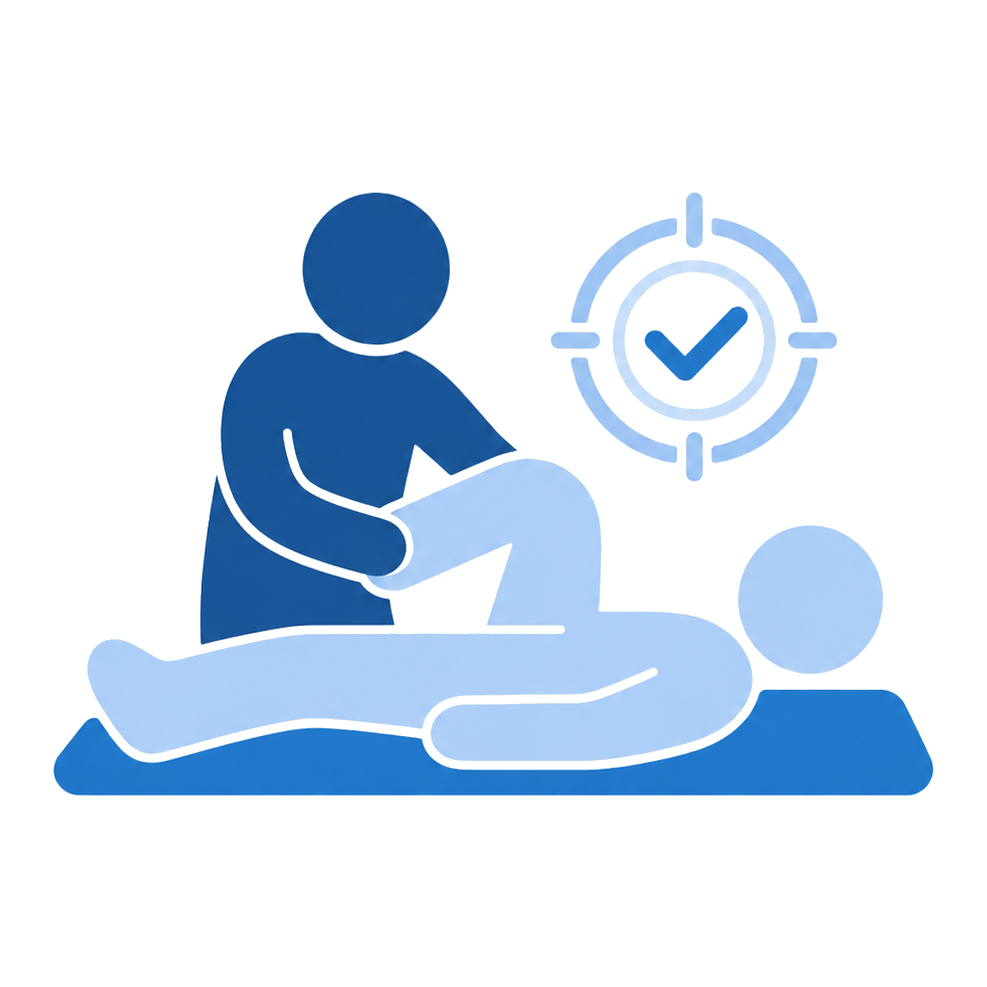
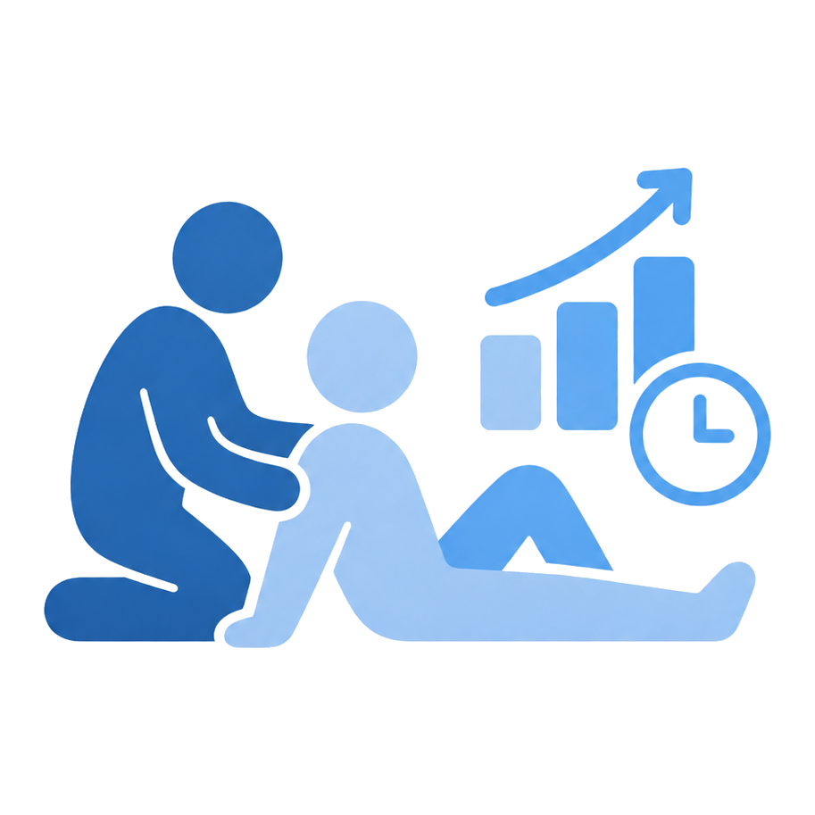
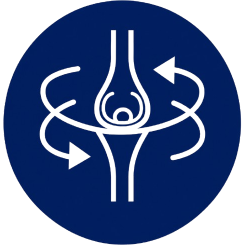
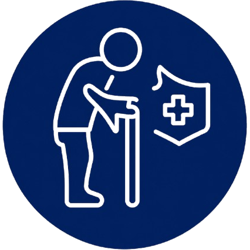
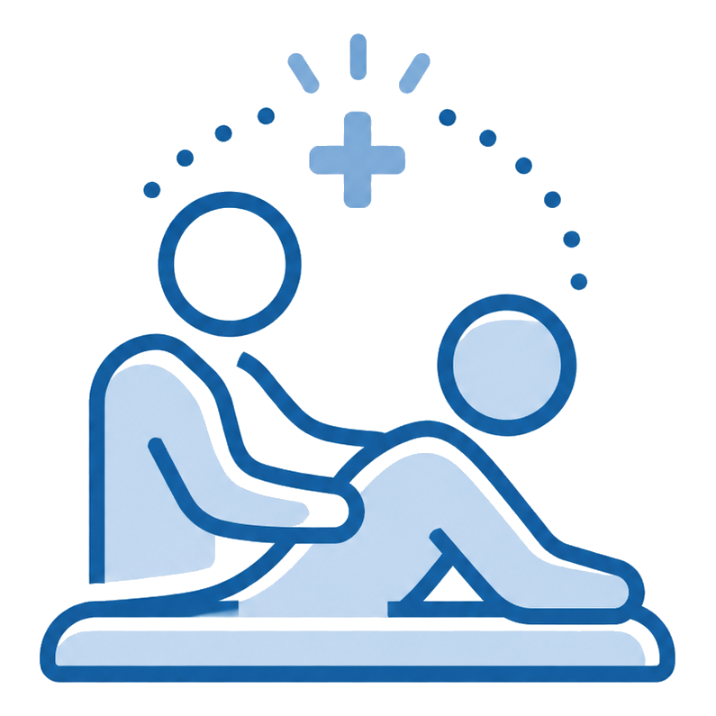
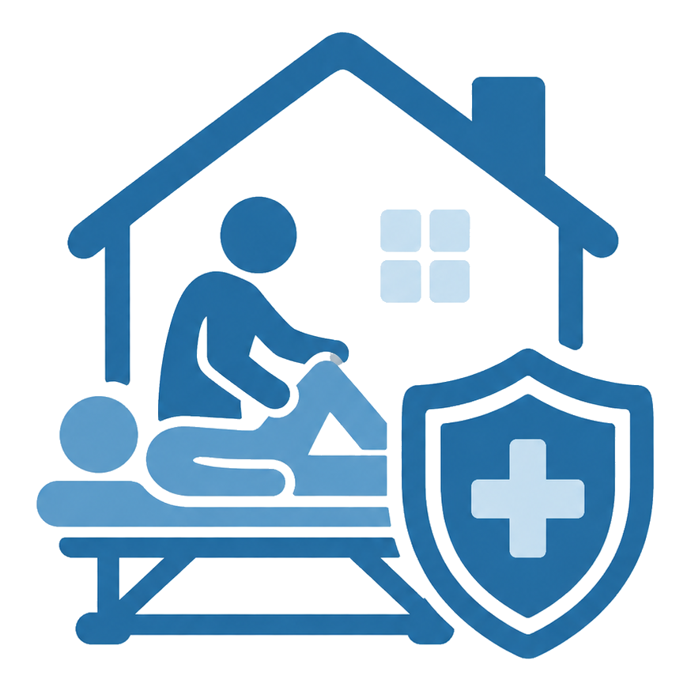
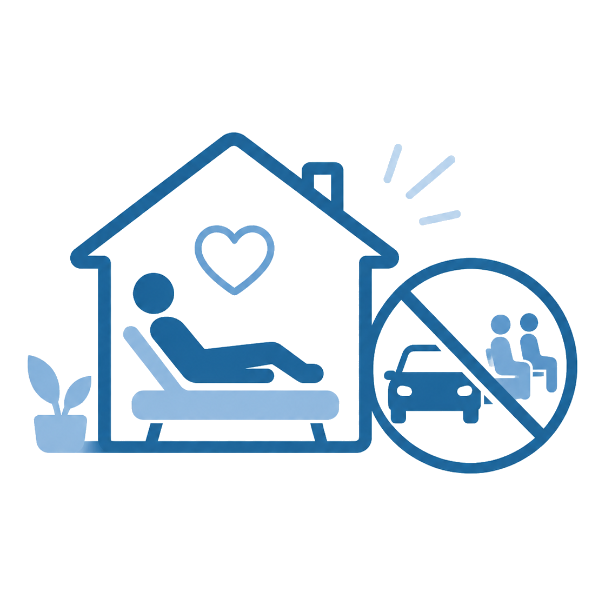
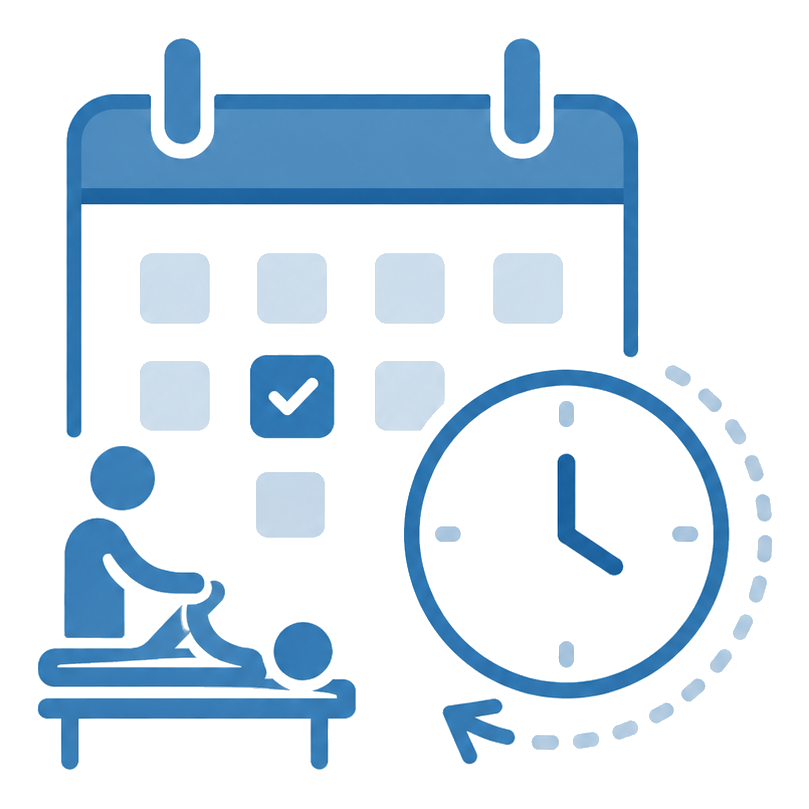
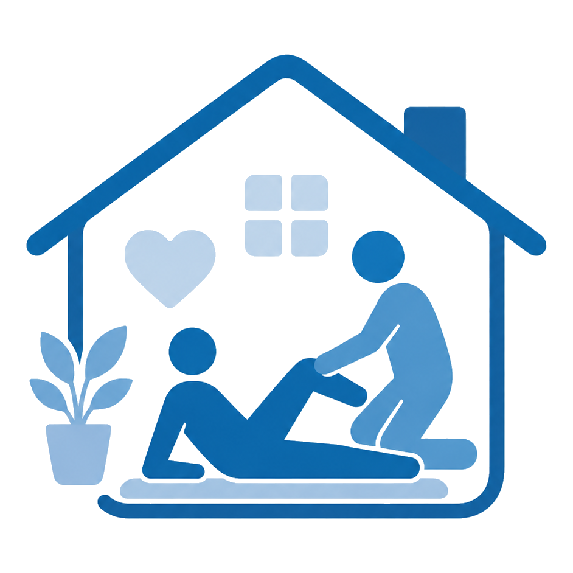

Atendimento humanizado
Cuidado acolhedor, com escuta ativa e participação da família no processo.
Fisioterapia domiciliar em Manaus
Atendimento humanizado para idosos, reabilitação, dores, pós-operatório e recuperação da mobilidade, com avaliação e acompanhamento fisioterapêutico personalizado.
Diferenciais
Cuidado acolhedor, com escuta ativa e participação da família no processo.

Sessões planejadas conforme a condição, rotina e evolução de cada paciente.

Acompanhamento claro, com cuidados práticos para manter a evolução em casa.
01 | Como funciona
O atendimento leva a fisioterapeuta até você para avaliar seu caso, orientar o tratamento e acompanhar sua evolução com segurança.
Conte sua necessidade e tire as primeiras dúvidas sobre o atendimento domiciliar.
Na primeira visita, são avaliados dor, mobilidade, rotina, objetivos e condições de segurança.
O tratamento é personalizado e acompanhado de perto, com orientações para você e sua família.
Indicações
A fisioterapia domiciliar pode ajudar pessoas que precisam de cuidado próximo, orientação profissional e mais segurança durante a recuperação.
02 | Especialidades
O cuidado é indicado para pessoas que precisam de reabilitação, prevenção, fortalecimento, ganho de mobilidade ou mais autonomia nas atividades diárias.

Indicado para dores articulares, lesões musculoesqueléticas, pós-operatório e recuperação funcional.
Reabilitação para adultos e crianças com foco em movimento, funcionalidade, autonomia e qualidade de vida.

Prevenção de quedas, fortalecimento, equilíbrio e mais independência nas atividades do dia a dia.
Atendimento no ambiente familiar, com mais conforto, orientação e praticidade para o paciente e sua família.
Cuidado acolhedor, com escuta ativa e participação da família no processo.

Sessões planejadas conforme a condição, rotina e evolução de cada paciente.

Reduz a exposição a ambientes externos e oferece mais tranquilidade ao paciente.

O atendimento vai até você, evitando trânsito, espera e esforço desnecessário.

Mais facilidade para adaptar as sessões à rotina do paciente e da família.

Exercícios e cuidados simples para manter a evolução entre as sessões.
Cuidado e segurança
Atendimento domiciliar com avaliação individualizada, orientação ao paciente e participação da família durante o processo de recuperação.
Sobre a fisioterapeuta
Graduada pela Universidade Federal do Amazonas (UFAM) e pós-graduanda em Fisioterapia Neurofuncional, atuo com *atendimento domiciliar (*Home Care) em Manaus*. Meu trabalho é focado em oferecer avaliação, acompanhamento e reabilitação personalizada nas áreas de **Traumato-Ortopedia, Gerontologia e Neurofuncional (Adulto e Pediátrico)*. Com uma prática baseada em evidências científicas e no cuidado humanizado, adoto uma abordagem que respeita a rotina e as necessidades individuais de cada paciente. O objetivo central de cada atendimento é integrar empatia e responsabilidade para promover a qualidade de vida, devolvendo *mobilidade, autonomia e segurança* no dia a dia.
Perguntas frequentes
Veja respostas para as principais dúvidas sobre o atendimento fisioterapêutico em domicílio.
Nem sempre. A fisioterapeuta pode realizar uma avaliação inicial para entender sua necessidade e orientar o melhor caminho. Em alguns casos, o encaminhamento médico pode ajudar no planejamento do tratamento.
Na primeira visita, são avaliados dor, mobilidade, força, equilíbrio, rotina, objetivos do paciente e condições de segurança do ambiente.
Sim. O atendimento é realizado no domicílio do paciente, oferecendo mais conforto, praticidade e segurança durante o processo de recuperação.
Sim. A fisioterapia geriátrica pode ajudar na prevenção de quedas, fortalecimento, equilíbrio, mobilidade e independência nas atividades do dia a dia.
Basta entrar em contato pelo WhatsApp, explicar sua necessidade e combinar o melhor horário para a avaliação.
03 | Contato
Fale pelo WhatsApp e agende sua avaliação. Explique sua necessidade para receber orientação sobre o melhor caminho para o seu cuidado.